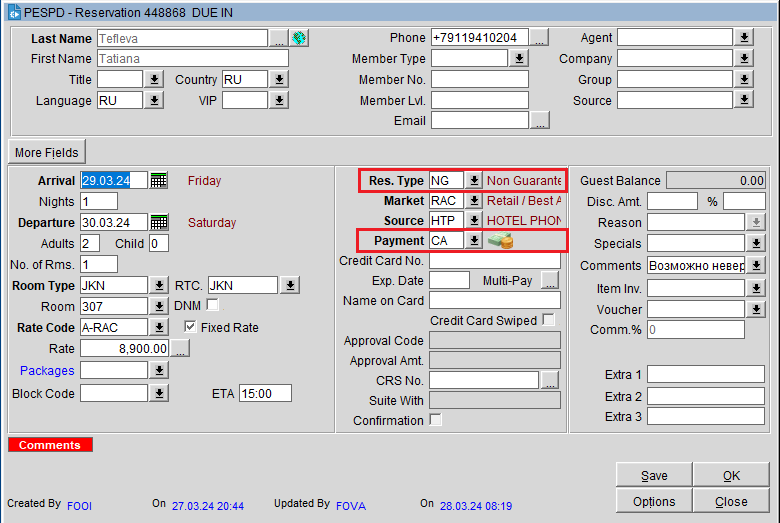

Тип бронирования
Есть два типа бронирования: гарантированное и негарантированное.
В опере они отображаются следующим образом: CC (Credit Card), NG (Non-Guaranteed), DR (Deposit Received), CO (Company), TA (Travel Agent), DG (Definite Group), DB (Direct Bill) и др.
Негарантированные бронирования отменяются без штрафа в 23:59 в день заезда, гарантированные бронирования отменяются в 12:00 следующего за днем заезда, со штрафом, в размере первой ночи.
Для начала следует запомнить эти:
NG (Non-Guaranteed) — негарантированные брони. Бронь не оплачена и заезд не гарантирован банковской картой. Могут быть отменены после 18:00 в день заезда, но как правило, мы дожидаемся гостей до 23:59, и бронь отменяет без штрафа супервайзер перед ночным аудитом.

CC (Credit Card) — гарантированные бронирования. Такие бронирования еще не оплачены, но гость гарантирует свой заезд банковской картой. В случае незаезда гостя: штраф за сутки. Оплата проживания осуществляется гостем при заселении.
DR (Deposit Received) — оплаченные бронирования. Гость либо внес предоплату на стойке ресепшена (у таких бронирований всегда есть красная метка Deposit). Либо гость забронировал и оплатил номер через наш официальный сайт или сервис Яндекса. При заселении метод оплаты должен быть CA (CASH).